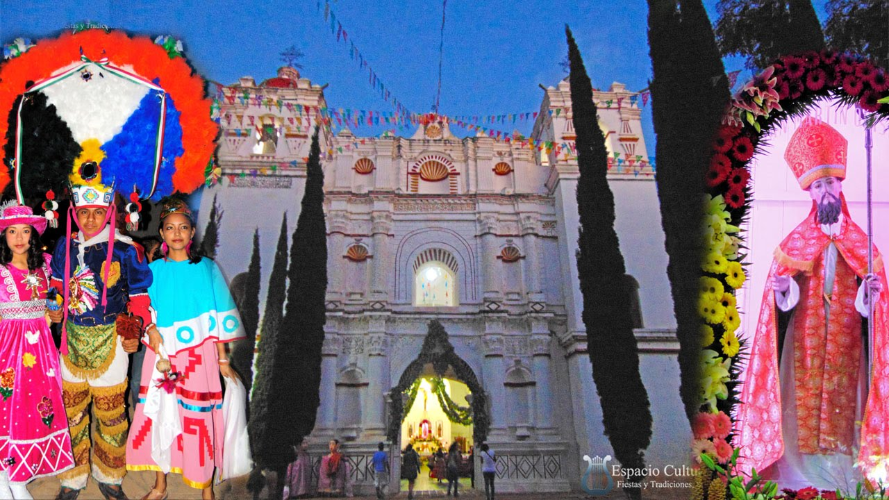
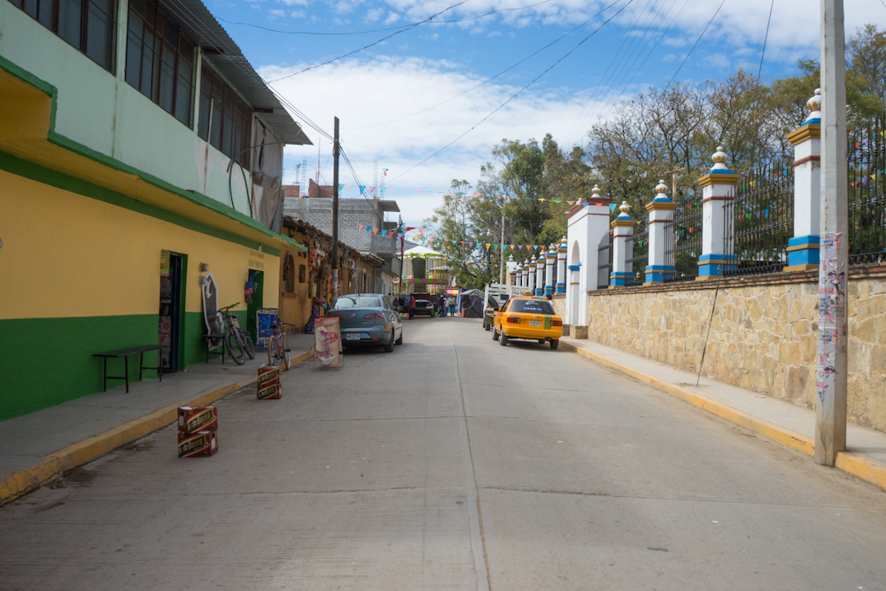
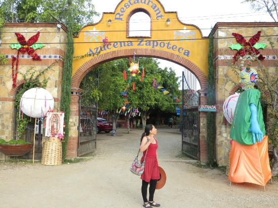

Comunidad
Se localiza en la parte central del estado de oaxaca, su región es la de los valles centrales y pertenece al distrito Ocotlán. El territorio de San Martín Tilcajete está conformado por pequeñas planicies y algunas elevaciones como la loma grande, buenavista y los mogotes, así como los cerros el chile, la doncella y teta de María Sánchez. deriva su nombre en honor a San Martín Caballero, obispo de Tours, santo patrón de Francia. La expresión Tilcajete, es una adaptación que hace referencia al cultivo de la grana cochinilla, ocupación principal del pueblo en los tiempos de la colonia. 'Til' corresponde a la tinta extraída del insecto y Cajete al pozo del cual se abastecía de agua la población. En el corazón del municipio, su plaza principal, la cual es acompañada por su imponente templo del cual no se cuenta con referencia de su fecha de construcción, podrás ver una serie de artesanos que ofrecen sus alebrijes con formas de animales, seres extraterrestres, naguales, ángeles o algo inesperado, prácticamente, surgidas de la imaginación del artesano oaxaqueño. Ese es el común denominativo de Tilcajete, cada espacio, seguro encontrarás un alebrije.
El 11 de noviembre se celebra la "Fiesta Grande" y su octava una semana después de esta festividad se celebra en honor del Patrón de la población San Martín Obispo.
El 15 de Enero se celebra la fiesta del Señor de Esquipulas y el 18 de Febrero el Milagro de San Martín. Todas las festividades se llevan a cabo con bailes, música, procesiones, fuegos pirotécnicos y feria popular.


